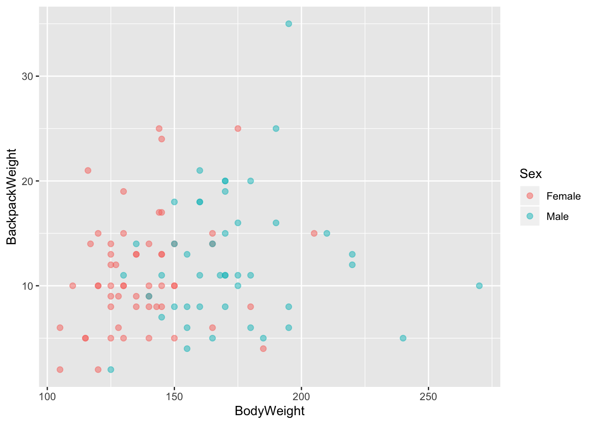

Chapter 3 Неделя 2, День 2, продолжение
3.1 RMarkdown

Если картинка не загрузилась, будет этот текст
Вот так делать заголовки:
# R Markdown
## Что такое RMarkdown
## Чанки с кодом Это чанк с кодом. Он отделяется ``` с обоих сторон и {r}. Это означает, что внутри находится код на R, который должен быть выполнен:
``` {r}
2+2
```
2+2## [1] 43.1.1 Настройки чанка
У чанка с кодом есть набор настроек. Самый важные из них такие:
echo: будет ли показан сам код
message и warning: будут ли показаны сообщения и предупреждения, всплывающие во время исполнения кода
eval: будет ли испольняться код внутри чанка
3.1.2 Настройка нескольких чанков
Все эти настройки можно настроить как для отдельных чанков, так и для все чанков сразу:
knitr::opts_chunk$set(echo = TRUE, message = FALSE, warning = FALSE)3.1.3 Чанки с Python!
Вместо {r} нужно написать {python}
x = 'hello, python !'
print (x.split(" "))## ['hello,', 'python', '!']3.1.4 Код вне чанков (inline code)
Число пи равно ` r pi `:
Число пи равно 3.1415927
3.1.5 Синтаксис Markdown (без R)
3.1.5.1 Выделение текста
*Курсив*
_Тоже курсив_
**Полужирный**
__Тоже полужирный__Курсив Тоже курсив Полужирный Тоже полужирный
3.1.5.2 Заголовки разных уровней
## Заголовки разных уровней
### Мне заголовок
#### И моему сыну тоже
##### И моему!
###### OK, boomer
3.1.5.3 Списки
Первый вариант списка выглядит так:
- Можно и с подсписком
Почему бы и нет?
- Кому нужен порядок
- Тот списки номерует
3.1.5.4 Цитаты
Цитата:
Я устал
Который год во мне живет нарвал
3.1.6 Таблицы
library(data.table)
go <- fread("data/iGLAS for R course.csv")
go[1:4,1:4]## StartDate EndDate Status IPAddress
## 1: 1/15/2017 1/16/2017 0 144.139.7.52
## 2: 1/27/2017 1/27/2017 0 31.54.151.215
## 3: 1/24/2017 1/24/2017 0 176.62.130.7
## 4: 01/10/2017 1/23/2017 0 86.161.181.218library(knitr)
kable(go[1:5,1:4])| StartDate | EndDate | Status | IPAddress |
|---|---|---|---|
| 1/15/2017 | 1/16/2017 | 0 | 144.139.7.52 |
| 1/27/2017 | 1/27/2017 | 0 | 31.54.151.215 |
| 1/24/2017 | 1/24/2017 | 0 | 176.62.130.7 |
| 01/10/2017 | 1/23/2017 | 0 | 86.161.181.218 |
| 12/11/2016 | 12/11/2016 | 0 | 31.211.8.249 |
3.1.6.1 Динамические таблицы
library(DT)
datatable(go[1:5, 1:5])3.1.7 Визуализации
library(ggplot2)
library(Stat2Data)
library(data.table)
data("Backpack")
back <- as.data.table(Backpack)
ggplot_scatter <- ggplot(back, aes(x = BodyWeight, y = BackpackWeight))+
geom_point(aes(colour = Sex), alpha = 0.5, size = 2)
ggplot_scatter
3.1.8 Динамические визуализации в plotly
library(plotly)
ggplotly(ggplot_scatter)